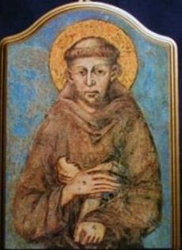
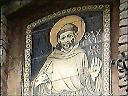
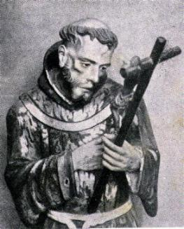
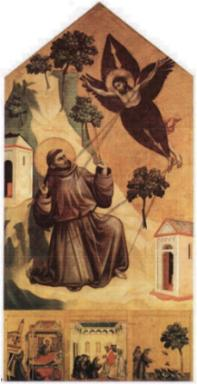
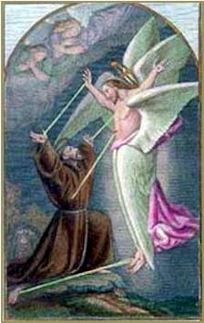
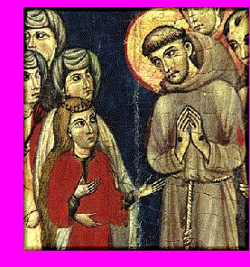
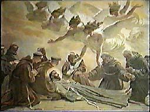
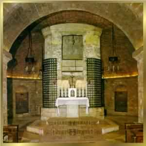
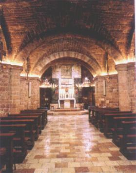
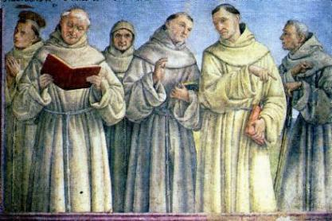

A CONFRARIA
Desde o início, a Confraria fundada por Francisco,
era uma Ordem de Penitentes 
NOSSA SENHORA NA VIDA DO SANTO
Em todas oportunidades, propunha NOSSA
SENHORA como modelo de todos os cristãos. Sempre que se referia a MÃE DE DEUS,
o fazia com carinho e muita doçura, enaltecendo a MÃE admirável que nunca se
esquece de um de seus filhos 
Giotto, famoso pintor italiano ornou a Basílica e o túmulo de São Francisco com pinturas que retratam passagens de sua vida e escreveu também no túmulo do Santo, versos dedicados a NOSSA SENHORA e composto pelo "Pobrezinho de Assis:"
"Saúdo-te Senhora Santa, Rainha Santíssima MÃE DE DEUS, Maria, que és Virgem Perpétua! O PAI Celeste elegeu-te e santificou-te com o seu Dileto e Santíssimo FILHO e com o ESPÍRITO SANTO Consolador. Em Ti, ó MÃE Querida, esteve e está toda plenitude da graça e todo bem! Amém!"
ORDEM TERCEIRA
Para acolher um número considerável de pessoas de todas as cidades, que queriam seguir a Regra franciscana, mas já possuíam outros compromissos no mundo, São Francisco fundou a Ordem Terceira, aberta indistintamente a padres e leigos, moças, jovens, viúvas, rapazes e cônjuges. Aos irmãos e irmãs desta Ordem, foi estabelecido como escopo: viver honestamente nas suas casas, no trabalho, nas paróquias e no ambiente de família; dar esmolas, atender as obras pias e de caridade; fugir da vida mundana, sobretudo, procurar santificar sua vida com um maior cultivo do amor a DEUS e a nossa MÃE SANTÍSSIMA.
ÚLTIMOS ANOS DE VIDA
Nos últimos anos de vida, ele diminuiu sensivelmente as viagens e missões, dedicando-se as orações e a escrever. Procurava permanecer mais tempo com seus frades, orientando, instruindo e dando a cada um o seu exemplo maravilhoso.
Sua condição física estava comprometida com diversas
doenças. Na 
Nos seus pensamentos e em sua vida interior, as vezes imaginava estar sendo perseguido pelo poder das trevas. Muitas vezes, à noite, enquanto rezava na solidão de uma Igreja deserta, ou numa ermida na floresta, parecia-lhe que alguém estava atrás dele. Tinha a impressão que passos rápidos e leves se moviam ao seu redor, ou que uma cabeça horrível olhasse por cima de seus ombros e tentasse ler o seu livro de orações. Em algumas oportunidades, ele ouvia um murmúrio surdo, nas horas mais silenciosas de suas vigílias noturnas, como se lábios invejosos lhes sussurrassem ao ouvido: "Tanto tempo perdido! Pode rezar e se recomendar a quem quiser, mas você só pertence a mim!"
Então, o "pobrezinho de Assis" lutava desesperadamente para neutralizar e esmagar aquela força estranha, que queria roubar a sua tranquilidade. Por conta dessa luta interior, os frades que vinham procurá-lo pela manhã, o encontravam pálido e definhado, quase desfalecido pelo esforço desprendido a noite, contra as forças do maligno. Todavia, em nenhuma ocasião, satanás teve meios para aparecer-lhe visivelmente e enfrentá-lo. Certo dia ele disse a Frei Pacífico: "Parece-me que sou o maior pecador do mundo." No mesmo dia, teve uma visão notável: "O Céu aberto mostrava um trono vazio rodeado de Anjos. A seguir, uma voz lhe disse que aquele era o trono onde sentava Lúcifer, que foi expulso do Paraíso e precipitado no abismo das trevas, e que agora, DEUS reservara para ele, em recompensa de sua profunda humildade."
O GRANDE MILAGRE
No verão de 1224, a saúde de Francisco dava
sinais de sensível melhora. Por isso, 
No dia seguinte, contou aos seus companheiros: "Se o Anjo tivesse tocado as cordas outra vez, pela beleza e inefável doçura dos acordes, estou certo que minha alma teria se separado do corpo e acompanhado o Anjo até o Céu!"

"Nós VOS adoramos SENHOR JESUS e VOS bendizemos, porque pela VOSSA Santa Cruz remiste o mundo!".
Dia 14 de Setembro de 1224, Festa da Exaltação da Santa Cruz. Francisco rezava no Monte Alverne e dizia ao SENHOR: "Meu SENHOR JESUS CRISTO, peço-VOS que me concedas esta graça, antes que eu morra! Que eu sinta, tanto quanto possível, na minha alma e no meu corpo, aquele Amor que o SENHOR, FILHO DE DEUS, sentiu quando estava inflamado, ao suportar com prazer, aquela terrível e abominável Paixão por todos nós pecadores!"
Estando assim rezando fervorosamente em estado de profunda contemplação, apareceu-lhe um Santo Anjo Serafim com seis asas resplandecentes e inflamadas, mantendo-se no espaço a uma determinada altura do chão. À medida que ele se aproximava, Francisco percebia que o emissário Divino tinha assumido a imagem de JESUS Crucificado, com todas as chagas, e por inspiração, logo compreendeu que em recompensa pelo seu imenso amor ao SENHOR Crucificado, ia receber as chagas de JESUS nas mãos, nos pés e no lado direito, onde penetrou a lança do centurião, não como martírio corporal, mas como demonstração do amor de DEUS por ele.
Desaparecendo a visão, ficaram no corpo de Francisco as chagas da Paixão de CRISTO e no seu coração, uma fulgurante e incandescente chama do Amor Divino.
Nas mãos e pés além dos orifícios permaneceram também os cravos, cujas cabeças sobressaiam nas palmas das mãos e no topo do pé direito. Do outro lado das mãos e na planta do pé, aparecia os cravos com as pontas rebatidos. No lado direito, havia a chaga da lança, entre a 5ª e a 6ª costela, aberta, vermelha e sangrenta.
Francisco procurava esconder as chagas, envolvendo panos que ficavam encharcados de sangue. Como era natural, ele não conseguiu esconder os estigmas por muito tempo, primeiro, porque entre os frades, havia um grupo mais achegado a ele por amizade e devoção, que logo observaram o milagre. Segundo porque as chagas causavam-lhe dores tão agudas, que às vezes lhe tornavam penosos até mesmo, os menores movimentos. Por essas razões, foi forçado a recorrer à assistência dos frades. Frei Leão foi o primeiro a ficar sabendo do segredo, a fim de poder ajudá-lo a enfaixar os pés e as mãos, protegendo as partes salientes dos cravos de ferro, porque também só assim é que conseguia amenizar as dores. Frei Leão também ficou com o encargo de mudar diariamente aquelas faixas e Frei Rufino, que lavava as roupas, também ficou conhecendo o segredo, porque o calção que Francisco usava, no lado direito ficava impregnado de sangue que fluía da chaga do lado. E assim, como eles dois, na continuidade dos dias, toda a Comunidade ficou sabendo da existência das chagas de JESUS impressas em São Francisco.
E sem dúvida, o primeiro efeito dos estigmas, foi infundir no Poverello de Assis, uma grande alegria interior e uma completa libertação de todas aflições e tristezas do mundo. Este sentimento de íntima felicidade, apareceu no "Canto dos Louvores", que escreveu em latim, logo após ter recebido as chagas do SENHOR. Também, nesta mesma ocasião escreveu a famosa benção franciscana:
O SENHOR vos abençoe e vos guarde! O SENHOR vos mostre a Sua Face e compadeça de vós. O SENHOR volva seu Rosto para a Glória e vos dê a Paz! O SENHOR vos abençoe! Amém!"
De um modo geral, nas preces e canções não
assinava o seu nome, mas desenhava 
Em 30 de Setembro deixou o Monte Alverne em companhia de Frei Leão, enquanto os outros frades lá permaneceram em orações e mortificações. Veio montado num animal cedido pelo Conde Orlando, porque com as chagas, não conseguia colocar os pés no chão. Na sequência dos dias, Clara fez para ele um par de sandálias de madeira apropriada, com rebaixamento interno, para encaixar a cabeça e a ponta do cravo rebatida. Assim, ele pode caminhar.
Francisco parecia ter readquirido todo ardor que possuía na juventude! Logo que chegou à Porciúncula, projetou sair a cavalo para outra missão. Continuamente falava nas grandes coisas que queria fazer. Evitava andar, embora estivesse usando as sandálias feita por Clara, fazia as viagens cavalgando, desse modo, às vezes conseguia visitar até cinco cidades em um dia. Em cada uma delas, pregava e ensinava a palavra de DEUS.
Numa destas viagens encontrou um mendigo leproso que maltratava os frades que vinham ajudá-lo. O Santo vendo aquele homem, saudou-o:
"DEUS lhe dê a paz meu caríssimo irmão!"
Respondeu o leproso: "Como posso ter paz se DEUS me tirou a que eu tinha e todo o bem, fazendo-me podre e fedorento? E mais, sou sempre afligido pelos frades que me envia, não servem para nada!"
Disse Francisco: "Filho, eu quero lhe servir, já que você não está satisfeito com os outros!"
"Mas o que poderá me fazer a mais que os outros?"
"O que você quiser!" respondeu o Santo.
Falou o leproso: "Quero que me laves inteiramente, porque exalo um mal cheiro tão forte, que nem mesmo eu estou conseguindo suportar!"
Imediatamente Francisco mandou aquecer água com muitas ervas perfumadas, despiu o leproso e começou a lavá-lo com as mãos, enquanto outro frade ia derramando água. Por Divino milagre, onde São Francisco passava os dedos, desaparecia a lepra, a carne ficava perfeitamente sã e bonita. E assim, o leproso ao perceber que estava ficando completamente curado, teve uma forte comoção, chorou e derramou lágrimas de alegria, sobretudo de agradecimento a DEUS por aquela graça tão especial. Muito emocionado, de joelhos no chão suplicava ao SENHOR perdão pelos seus muitos pecados.
Francisco, vendo o admirável milagre feito pelo CRIADOR, através de suas mãos, humildemente prostrou-se com os joelhos no chão e agradeceu a misericórdia de DEUS. Depois, sem que as pessoas percebessem, partiu, indo para terras bem distantes, porque queria fugir da curiosidade das pessoas, dos elogios, dos aplausos e da glória humana. Tudo o que fazia, era para a maior honra e glória do SENHOR, e não a sua.
Mas na verdade, o novo ardor que Francisco mostrava, era como o último lampejo de uma luz muito bonita que finalmente estava para se extinguir. Os dias do "Poverello de Assis" estavam contados. A doença da vista se agravava e a cegueira aumentava. Mas, ainda foi nesta época que compôs a sua esplêndida obra-prima: "Hino ao Irmão Sol".
MORTE DE FRANCISCO
Quando
percebeu que estava próximo de morrer, mandou que o levassem para a 
O povo de Assis ao saber da notícia, acorreu a Porciúncula para prestar-lhe as últimas homenagens. Depois, juntamente com os frades, transportaram o corpo para a Catedral de Assis, levando tochas acesas e um ramo de oliveira, cantando hinos de louvor, ao som de trombetas e flautas. Na manhã do dia seguinte o cortejo fúnebre alcançou São Damião. O corpo de Francisco foi levado para a Igreja a fim de que as freiras pudessem ver pela última vez o seu pai espiritual. Os frades removeram a grade através da qual as freiras participavam das celebrações litúrgicas e soergueram o ataúde com aquele corpo venerável e o mantiveram elevado, tão longo tempo quanto podiam desejá-lo Irmã Clara e as monjas.
Dois anos após a sua morte foi beatificado e em 1228, declarado Santo no dia 16 de Julho pelo Papa Gregório IX. Seu Mausoléu encontra-se na Basílica com o seu nome, em Assis.
"Perfil maravilhoso: era atraente e de aspecto glorioso na inocência de sua vida, simplicidade das palavras, pureza de coração, amor a DEUS, caridade fraterna, trato afetuoso, amável, primava pela delicadeza. Tinha maneiras simples, prudência nos julgamentos, fidelidade nas obrigações, serenidade; constante na oração, contemplativo, fervoroso em todas as coisas, firme nas resoluções, equilibrado e perseverante. Oportuno nos conselhos, rápido para perdoar, demorado para enraivecer, manso, paciente e flexível com todos; rosto alegre, aspecto bondoso, humilde. Era de inteligência pronta, memória luminosa, rigoroso consigo mesmo. De vigilância constante sobre si, primoroso espírito de disciplina. O mais Santo de todos, sabia estar entre os pecadores, como se fosse um deles." Escreveu Frei Tomás de Celano, seu contemporâneo.
São Francisco foi escolhido oficialmente padroeiro da Itália.


O corpo de São Francisco ficou escondido de 25 de Maio de 1230 até Dezembro de 1818, quando foi encontrado. Foi construída uma cripta na Basílica Nova, onde ele foi colocado e ao redor estão os sepulcros de seus amigos: Bernardo, Masseu, Leão, Egídio, ...

Estes eram os Frades mais próximos de São Francisco, os amigos fieis de todos os momentos: (da esquerda para direita) Bernardo, Junípero, Silvestre, Masseu, Leão e Egídio.